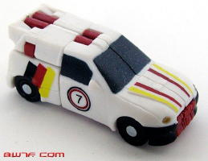
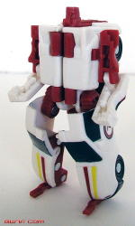
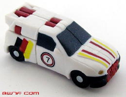
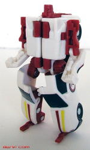
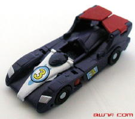
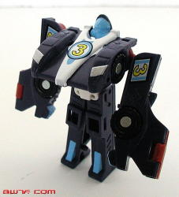
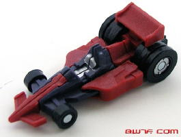
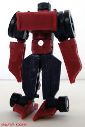
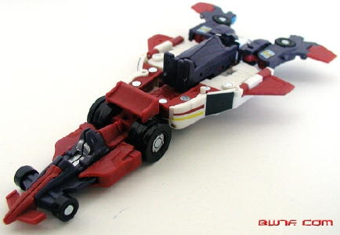

Dirt
Boss
Dirt
Boss
 
Difficulty of Transformation : Very Easy
Comes with : Red Alert or Landmine
Color Scheme : White, flat red, black, dark sparkly blue, and some yellow
Individual Rating : 7.1
Race
Team Pack-Ins (Cybertron; Wal-Mart Exclusives)
Allegiance
: Minicon
Size
: Mini-Con
Team Gimmick
: Ability to combine
into the
Skyboom
Shield
(NOTE: Because this set is a repaint, this is not a full-blown review. This mainly covers any changes made to the mold and the color scheme, and merely compares it the Armada Race Team. For a review on the mold itself, read the review of the Armada Race Team here .)
A bit of an explanation
is in order for these unique exclusives before I move onto a straight review.
These pack-ins do NOT come by themselves-- each of the following three
Minicon repaints are packed in with their own Tiny Tins and one of six
different Cybertron deluxes (the first two waves of them), and unfortunately,
the deluxes themselves are unchanged from the mass retail versions. Each
Minicon is packed in with two different deluxes (which ones are mentioned
in the review), and the set retailed, at first for about $12 U.S. However,
for obvious reasons (repainted Minicon, but not repainted widely-available
larger toy), they didn't sell very well, so they're much cheaper as of
this writing (8/06).
Dirt
Boss


Difficulty of Transformation
: Very
Easy
Comes with
:
Red
Alert
or
Landmine
Color Scheme
: White, flat red, black,
dark sparkly blue, and some yellow
Individual Rating
: 7.1
Out of the three Minicons
in the Race Team, Dirt Boss has changed the most from his previous paint
jobs. It's a rather interesting combination of his original and
Road
Assault
color schemes-- namely, he shares the red from his Road Assault
scheme, but retains most of the other colors from his original scheme.
One thing that is new in the mix is that his main body is now white, as
opposed to gray or black. Overall, the color schemes fits together pretty
well and looks mighty nice (though not as nice as his Road Assault colors),
but his main paint apps are identical to his original paint job, which
still makes him too similar to his original scheme for my liking.
No mold changes have
been made to Dirt Boss.
Downshift


Difficulty of Transformation
: Very
Easy
Comes with
:
Dirt
Boss
(Deluxe, not the Minicon) or
Thundercracker
Color Scheme
: Dark gray, flat red,
light gray, "baby" blue, and some black, yellow and silver
Individual Rating
: 4.0
Chalk Downshift up as
another barely-repainted exclusive repaint. All that's changed is that
the original Downshift's yellow has been changed for red, and the dark
gray is now more of a black color. The red does look a bit better than
the yellow, but it's still such an incredibly lazy re-release of the mold,
it's definitely not worth getting.
No mold changes have
been made to Downshift.
Mirage


Difficulty of Transformation
: Very
Easy
Comes with
:
Hot
Shot
or
Override
Color Scheme
: Dark gray, flat red,
black, and some silver
Individual Rating
: 4.1
Like Dirt Boss, Mirage
is an amalgamation of his original and Road Assault versions. He shares
the dark gray and paint apps of the original version, but has the red of
the Road Assault version. Overall, I think it's the best color combination
for this toy, but it still is a lousy mold and something more different
than the previous two schemes should have been used.
No mold changes have
been made to Mirage.
Skyboom
(Gestalt Form)

Difficulty of Transformation
: Easy
Color Scheme:
Flat red, light gray,
black, dark gray, and some "baby" blue, silver, yellow, and dark sparkly
blue
Individual Rating
: 4.3
This version of the Skyboom
shield looks almost as good as the Road Assault version, because the ugly
yellow of the original version has been replaced with red, and Dirt Boss'
white goes together pretty well with the red and dark gray/black of Downshift
and Mirage. In fact, all of the colors fit nicely together, though again,
I don't think it's different enough from the original paint job.
No mold changes have
been made to Skyboom.
The new Race Team have fairly good color schemes, but they're not nearly different enough to be repaints worthy of purchasing if you already have the originals (especially Downshift). However, if you don't have any of the previous versions of these toys, and you don't have the necessary three of the six Cybertron deluxe molds these guys come packed with, then it's a fairly good deal, especially now that they're all on clearance prices. However, that's pretty unlikely, so if that's not the case, only VERY hardcore completists should consider hunting these down.
Review by Beastbot
(All pictures taken from bwtf.com .)